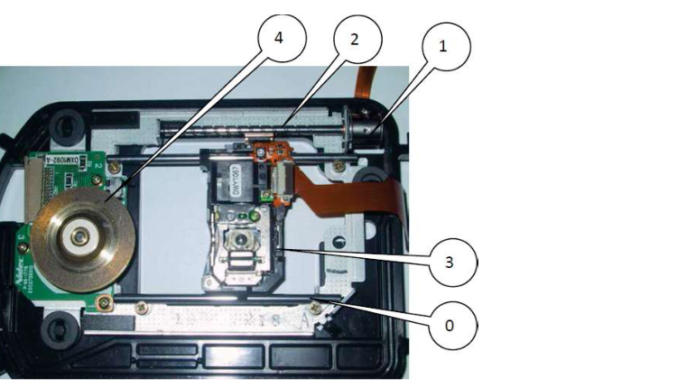
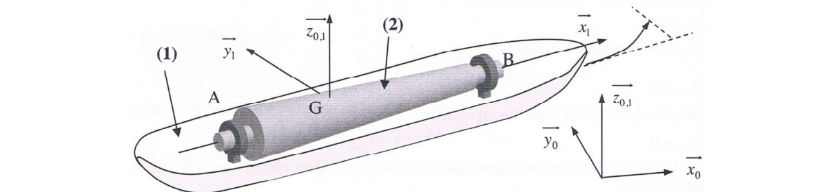
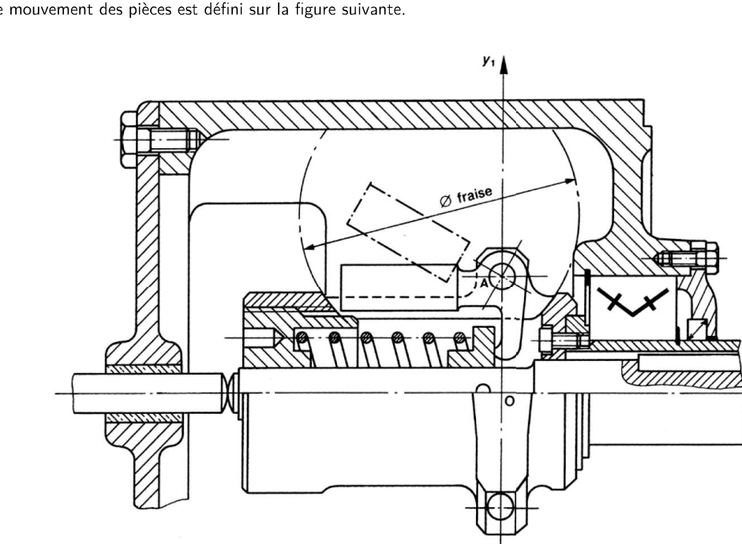
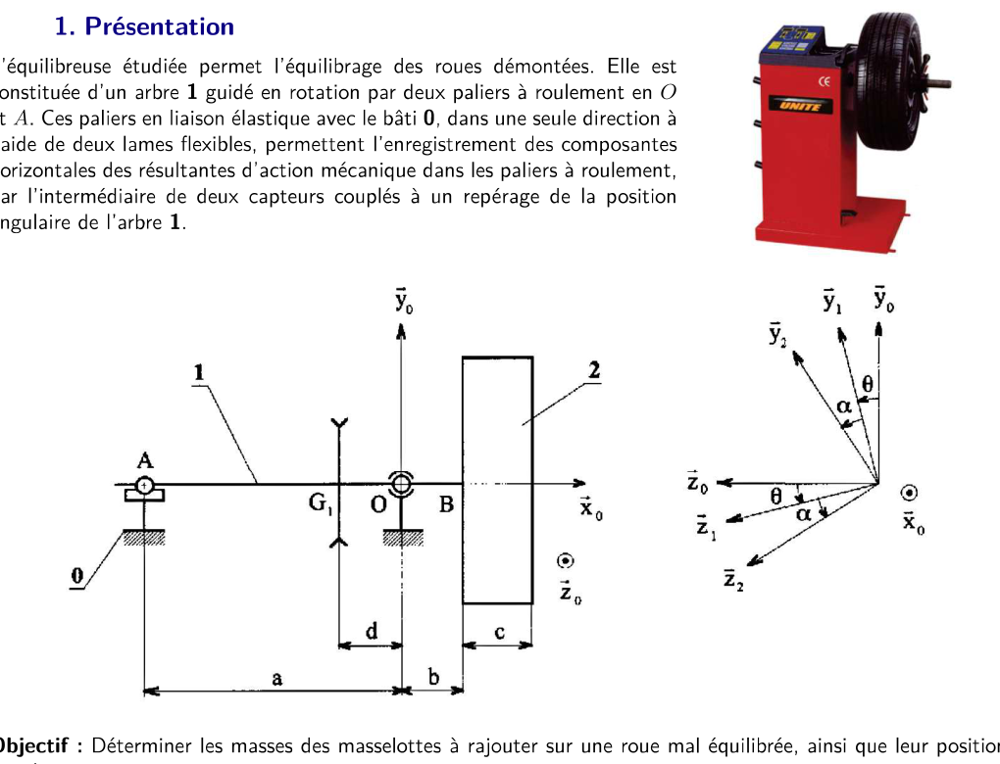
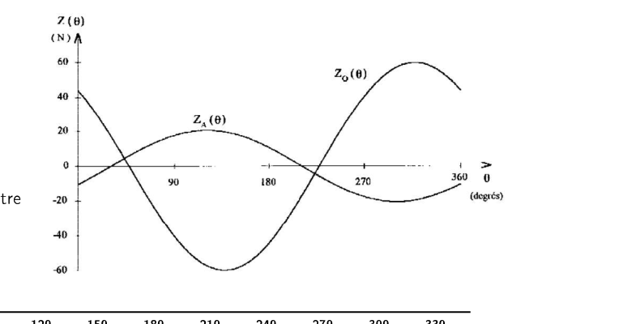
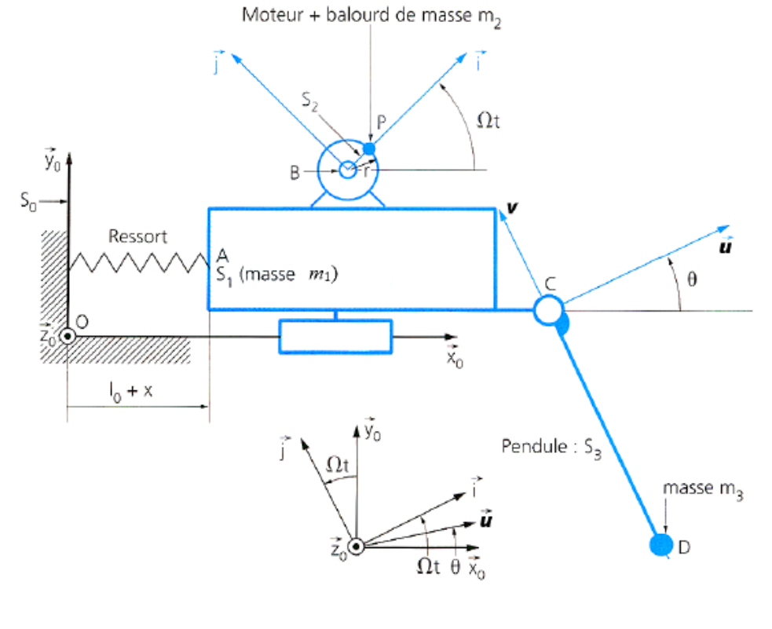
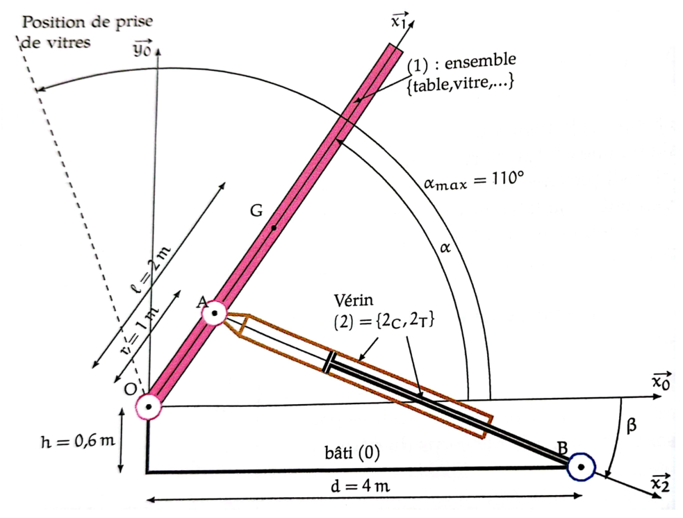
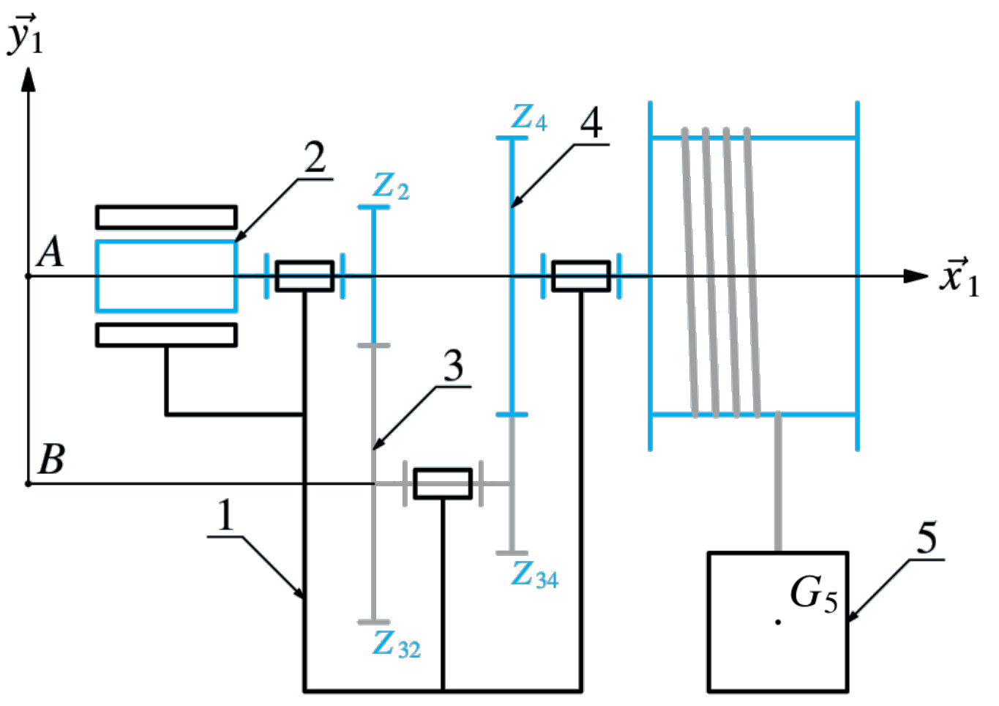
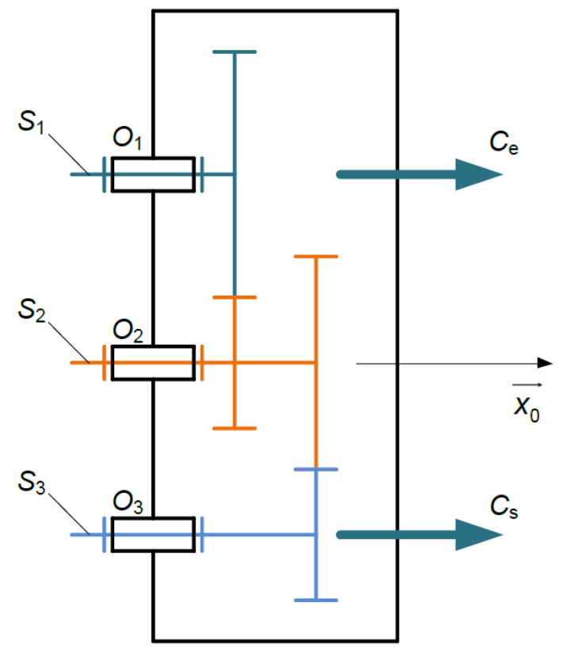

SI AM2 (2ᵉ année) · Chapitre 3 — Dynamique du solide
Chapitre 3 — Dynamique du solide
Résumé de cours détaillé : Principe Fondamental de la Dynamique (PFD) appliqué au solide, torseur
dynamique, torseur cinétique, opérateur d'inertie (matrice d'inertie, théorème de Huygens), cas particuliers
classiques (translation, rotation autour d'un axe fixe) et méthodologie complète de résolution. Ce chapitre est
le prérequis direct des chapitres C08 (efforts aux effecteurs), C10 (comportement cinématique) et C13/C14 (SII
ECAM 1) — c'est la généralisation au solide indéformable du PFD du point matériel vu en physique.
Source : S2I CM C03 — Dynamique du solide (18 p.).
Moment cinétique pratique\(\vec\sigma_{A\in S/R_g}=\bar{\bar I}_{(A,S)}.\vec\Omega_{S/R_g}+m\,\overrightarrow{AG}\wedge\vec V_{A\in S/R_g}\)
Moment dynamique / cinétique\(\vec\delta_{A\in S/R_g}=\Big[\dfrac{d\vec\sigma_{A\in S/R_g}}{dt}\Big]_{R_g}+\vec V_{A/R_g}\wedge m\vec V_{G\in S/R_g}\)
Opérateur d'inertie\(\bar{\bar I}_{(A,S)}=\begin{pmatrix}A&-F&-E\\-F&B&-D\\-E&-D&C\end{pmatrix}\), \(A{=}\int(y^2{+}z^2)dm\), \(D{=}\int yz\,dm\) (idem \(B,C,E,F\) par permutation)
Théorème de Huygens\(\bar{\bar I}_{(O,S)}=\bar{\bar I}_{(G,S)}+m\begin{pmatrix}b^2{+}c^2&-ab&-ac\\-ab&a^2{+}c^2&-bc\\-ac&-bc&a^2{+}b^2\end{pmatrix}\), \(\overrightarrow{OG}=a\vec x{+}b\vec y{+}c\vec z\)
Translation\(\{\mathcal T_{ext\to S}\}_A=\{m\vec\Gamma_{G\in S/R_g}\,;\ m\,\overrightarrow{AG}\wedge\vec\Gamma_{G\in S/R_g}\}\), nul en \(G\)
Rotation autour d'un axe fixe \((O,\vec z)\)\(\{\mathcal T_{ext\to S}\}_O=\{m\vec\Gamma_{G\in S/R_g}\,;\ J\ddot\theta\,\vec z\}\) si \(G\) sur l'axe et axe principal
Dérivée d'une composante (astuce)\(\Big[\dfrac{d\vec u}{dt}\Big]_R\!\cdot\vec z=\Big[\dfrac{d(\vec u\cdot\vec z)}{dt}\Big]_R-\vec u\cdot\Big[\dfrac{d\vec z}{dt}\Big]_R\) — nul si \(\vec z\) fixe dans \(R\)
Formule de Bour\(\Big[\dfrac{d\vec u}{dt}\Big]_{R_1}=\Big[\dfrac{d\vec u}{dt}\Big]_{R_2}+\vec\Omega_{R_2/R_1}\wedge\vec u\)
Méthode (6 étapes)graphe de structure → isolement → IAME → écriture du PFD → détermination du torseur dynamique → équations/résolution (mêmes point + base)
1. Introduction — référentiels, PFD du point matériel
La dynamique étudie les relations entre les mouvements d'un solide et leurs causes (les
actions mécaniques) : c'est le carrefour entre la cinématique et la statique. Deux problématiques types :
les efforts sont connus et on cherche le mouvement, ou le mouvement est imposé et on cherche les actions
mécaniques qu'il engendre (dimensionnement d'actionneur, tenue de pièce en accélération...).
Référentiel galiléen
Pour écrire les lois de Newton, il faut un référentiel « absolu » (repère + horloge). En mécanique
classique on admet le référentiel de Copernic (origine = centre d'inertie du système solaire, axes
pointant vers des étoiles fixes) comme absolu. Tout référentiel en translation rectiligne uniforme
par rapport à lui est dit galiléen — en particulier le référentiel terrestre (géocentrique), en
négligeant la rotation propre de la Terre.
Base / repère / référentielBase : 3 vecteurs orthonormés directs. Repère : un point origine + une base (outil de calcul,
projections). Référentiel : un repère + une horloge (permet de définir vitesse/accélération). En
pratique on confond souvent repère et référentiel.
★ PFD du point matériel (rappel de physique — 2e loi de Newton)
Pour un point matériel \(P\) de masse \(m\) :
\[\exists R_g\ \text{tq}:\qquad \sum\overrightarrow{F_{ext\to P}}=m\,\overrightarrow{\Gamma_{P/R_g}}
\qquad\text{et}\qquad \sum\overrightarrow{M_{P,ext\to P}}=\vec0\]
La seconde équation est triviale pour un point (toutes les forces sont concourantes en \(P\)) — elle
devient l'enjeu principal du chapitre dès qu'on passe au solide étendu (§2).
2. PFD du solide — torseur dynamique
Un solide \(S\) est modélisé comme un ensemble continu de points matériels \(M\) affectés d'une masse
élémentaire \(dm\). On applique le PFD à chaque \(dm\), puis on intègre sur tout le solide.
2.1 Théorème de la résultante dynamique
Démonstration (idée)
\(\displaystyle\int_S dm\,\overrightarrow{\Gamma_{M\in S/R_g}}=\int_S\Big[\dfrac{d^2\overrightarrow{OM}}{dt^2}\Big]_{R_g}dm
=\Big[\dfrac{d^2}{dt^2}\int_S\overrightarrow{OM}\,dm\Big]_{R_g}=\Big[\dfrac{d^2}{dt^2}\big(m\,\overrightarrow{OG}\big)\Big]_{R_g}
=m\,\overrightarrow{\Gamma_{G\in S/R_g}}\) (masse indépendante du temps, définition de \(G\)).
★★ Théorème de la résultante dynamique (à savoir par cœur)
\[\boxed{\ \sum\overrightarrow{F_{ext\to S}}=m\,\overrightarrow{\Gamma_{G\in S/R_g}}\ }\]
2.2 Théorème du moment dynamique
Démonstration (idée)
En un point \(A\) lié à \(S\) : \(\displaystyle\int_S\sum\overrightarrow{M_{M,ext\to M}}=\vec0\) se réécrit
(changement de point puis PFD ponctuel) :
\[\overrightarrow{M_{A,ext\to S}}+\int_S\overrightarrow{MA}\wedge dm\,\overrightarrow{\Gamma_{M\in S/R_g}}=\vec0
\quad\Longrightarrow\quad \overrightarrow{M_{A,ext\to S}}=\int_S\overrightarrow{AM}\wedge\overrightarrow{\Gamma_{M\in S/R_g}}\,dm\]
★★ Théorème du moment dynamique
\[\boxed{\ \overrightarrow{M_{A,ext\to S}}=\overrightarrow{\delta_{A\in S/R_g}}=\int_S\overrightarrow{AM}\wedge\overrightarrow{\Gamma_{M\in S/R_g}}\,dm\ }\]
2.3 Torseur dynamique
Définition
\(\overrightarrow{F_{ext\to S}}\) et \(\overrightarrow{M_{A,ext\to S}}\) forment le torseur des actions
mécaniques extérieures à \(S\) au point \(A\) (transport de Varignon habituel). De même,
\(m\overrightarrow{\Gamma_{G\in S/R_g}}\) et \(\overrightarrow{\delta_{A\in S/R_g}}\) forment un torseur, le
torseur dynamique de \(S/R_g\) au point \(A\) (lié à \(S\)) :
\[\{\mathcal D_{S/R_g}\}_A=\left\{\begin{array}{l} R\{\mathcal D_{S/R_g}\}=m\,\overrightarrow{\Gamma_{G\in S/R_g}}\\[.2em]
M_A\{\mathcal D_{S/R_g}\}=\overrightarrow{\delta_{A\in S/R_g}}\end{array}\right\}_A\]
\(m\overrightarrow{\Gamma_{G\in S/R_g}}\) est la quantité d'accélération (kg·m·s⁻²), \(\overrightarrow{\delta_{A\in S/R_g}}\)
le moment dynamique (kg·m²·s⁻² ou N·m). Comme tout torseur, il se transporte par Varignon :
\(\overrightarrow{\delta_{B\in S/R_g}}=\overrightarrow{\delta_{A\in S/R_g}}+\overrightarrow{BA}\wedge m\overrightarrow{\Gamma_{G\in S/R_g}}\).
★★★ PFD torseuriel galiléen (résultat central du chapitre)
\[\boxed{\ \{\mathcal T_{ext\to S}\}_A=\{\mathcal D_{S/R_g}\}_A\ }\]
Soit, en séparant résultante et moment (au même point, dans la même base) :
\[\overrightarrow{F_{ext\to S}}=m\,\overrightarrow{\Gamma_{G\in S/R_g}}\qquad,\qquad
\overrightarrow{M_{A,ext\to S}}=\overrightarrow{\delta_{A\in S/R_g}}\]
Piège classique
Les deux torseurs \(\{\mathcal T_{ext\to S}\}\) (bilan des actions mécaniques) et \(\{\mathcal D_{S/R_g}\}\)
(issu du mouvement) se déterminent séparément et indépendamment — puis on les égalise au même
point et dans la même base pour obtenir au maximum 6 équations scalaires.
2.4 Cas d'un ensemble de solides
Pour \(\Sigma=S_1+S_2+\dots+S_n\), les torseurs dynamiques s'additionnent au même point :
\(\{\mathcal T_{ext\to\Sigma}\}_A=\{\mathcal D_{S_1/R_g}\}_A+\dots+\{\mathcal D_{S_n/R_g}\}_A\). Le PFS
(statique) est le cas particulier du PFD où l'accélération est nulle (solide immobile ou en translation
rectiligne uniforme).
2.5 PFD dans un référentiel non galiléen \(R_{ng}\)
Si \(R_{ng}\) n'est pas galiléen, on doit ajouter des forces d'inertie (fictives, proportionnelles à
la masse) :
\[\{\mathcal D_{S/R_{ng}}\}_A=\{\mathcal T_{ext\to S}\}_A-\{\mathcal D_{E,R_{ng}/R_g}\}-\{\mathcal D_{Cor,S/R_g}\}\]
(torseurs des forces d'inertie d'entraînement et de Coriolis). Si \(R_{ng}\) est en translation
rectiligne uniforme par rapport à \(R_g\), ces deux torseurs sont nuls : \(R_{ng}\) est en fait
galiléen. Hors programme de ce chapitre (rappelé pour mémoire).
3. Torseur cinétique
Définition
\[\{\mathcal C_{S/R_g}\}_A=\left\{\begin{array}{l} R\{\mathcal C_{S/R_g}\}=\displaystyle\int_S\overrightarrow{V_{M\in S/R_g}}\,dm=m\,\overrightarrow{V_{G\in S/R_g}}\\[.3em]
M_A\{\mathcal C_{S/R_g}\}=\overrightarrow{\sigma_{A\in S/R_g}}=\displaystyle\int_S\overrightarrow{AM}\wedge\overrightarrow{V_{M\in S/R_g}}\,dm\end{array}\right\}_A\]
\(m\overrightarrow{V_{G\in S/R_g}}\) = quantité de mouvement (kg·m·s⁻¹), \(\overrightarrow{\sigma_{A\in S/R_g}}\)
= moment cinétique (kg·m²·rad·s⁻¹). Le torseur cinétique se transporte aussi par Varignon (théorème
de König) : \(\overrightarrow{\sigma_{B\in S/R_g}}=\overrightarrow{\sigma_{A\in S/R_g}}+\overrightarrow{BA}\wedge m\overrightarrow{V_{G\in S/R_g}}\).
3.1 Relation entre torseur cinétique et torseur dynamique
Résultantes
\(R\{\mathcal D_{S/R_g}\}=\Big[\dfrac{dR\{\mathcal C_{S/R_g}\}}{dt}\Big]_{R_g}\) (immédiat : dérivée seconde
de position = dérivée première de vitesse).
Cas particuliers (le terme correctif s'annule)
Si \(A\) est fixe dans \(R_g\) (\(\overrightarrow{V_{A/R_g}}=\vec0\)), ou si \(A=G\)
(\(\overrightarrow{V_{A/R_g}}\wedge\overrightarrow{V_{G\in S/R_g}}=\vec0\)) :
\[\overrightarrow{\delta_{A\in S/R_g}}=\Big[\dfrac{d\overrightarrow{\sigma_{A\in S/R_g}}}{dt}\Big]_{R_g}\]
C'est la forme la plus utilisée en pratique (choisir \(A=O\) fixe ou \(A=G\) simplifie toujours le calcul).
3.2 Calcul pratique du moment cinétique — l'opérateur d'inertie
★ Méthode (évite les doubles produits vectoriels)
En écrivant \(\overrightarrow{V_{M\in S/R_g}}=\overrightarrow{V_{A\in S/R_g}}+\overrightarrow{MA}\wedge\overrightarrow{\Omega_{S/R_g}}\)
puis en intégrant, on isole un opérateur linéaire \(\bar{\bar I}_{(A,S)}\) tel que
\(\bar{\bar I}_{(A,S)}.\vec u=\int_S\overrightarrow{AM}\wedge(\vec u\wedge\overrightarrow{AM})\,dm\) — c'est
l'opérateur d'inertie, étudié en détail au §4. Le moment cinétique se réécrit alors sans aucune
intégrale « pénible » à refaire à chaque exercice :
\[\boxed{\ \overrightarrow{\sigma_{A\in S/R_g}}=\bar{\bar I}_{(A,S)}.\overrightarrow{\Omega_{S/R_g}}+m\,\overrightarrow{AG}\wedge\overrightarrow{V_{A\in S/R_g}}\ }\]
Cas particuliers : si \(A=G\) ou si \(A\in S\) est fixe dans \(R_g\), le second terme s'annule :
\(\overrightarrow{\sigma_{A\in S/R_g}}=\bar{\bar I}_{(A,S)}.\overrightarrow{\Omega_{S/R_g}}\).
4. L'opérateur d'inertie
Définition — matrice d'inertie
\(\bar{\bar I}_{(A,S)}\) est une application linéaire de \(\mathbb R^3\) dans \(\mathbb R^3\), représentée
dans une base \(b(\vec x,\vec y,\vec z)\) par une matrice symétrique (en posant \(\overrightarrow{AM}=x\vec x+y\vec y+z\vec z\)) :
\[\bar{\bar I}_{(A,S)}=\begin{pmatrix}A&-F&-E\\-F&B&-D\\-E&-D&C\end{pmatrix}_{\!b}\]
Moments d'inertie (kg·m²)
Produits d'inertie (kg·m²)
\(A=\displaystyle\int_S(y^2+z^2)\,dm\)
\(D=\displaystyle\int_S yz\,dm\)
\(B=\displaystyle\int_S(x^2+z^2)\,dm\)
\(E=\displaystyle\int_S xz\,dm\)
\(C=\displaystyle\int_S(x^2+y^2)\,dm\)
\(F=\displaystyle\int_S xy\,dm\)
L'opérateur d'inertie décrit la répartition des masses du solide autour du point \(A\). Un moment
d'inertie est toujours positif (nul seulement pour un solide infiniment fin selon l'axe considéré) et
est minimal pour un axe passant par le centre d'inertie \(G\).
4.1 Moment d'inertie par rapport à un axe
Pour un axe \(\Delta=(O,\vec u)\) : \(\displaystyle I_\Delta=\vec u\cdot\big(\bar{\bar I}_{(O,S)}.\vec u\big)\).
Le produit matriciel \(\bar{\bar I}.\vec u\) n'a de
sens que si la matrice et \(\vec u\) sont exprimés dans la même base.
4.2 Base propre d'inertie, simplifications par symétrie
Base propre
Il existe toujours, en \(G\), une base \((\vec x',\vec y',\vec z')\) où \(\bar{\bar I}_{(G,S)}\) est
diagonale (produits d'inertie nuls). Une rotation autour d'un de ces axes se fait sans vibration
(solide dynamiquement équilibré). Dynamiquement équilibré ⟹ statiquement équilibré (\(G\) sur
l'axe) ; la réciproque est fausse.
★ Simplifications à connaître par cœur (gain de temps considérable)
Plan de symétrie \((O,\vec x_s,\vec y_s)\) : les produits d'inertie impliquant \(z_s\) sont nuls
(\(D=E=0\)) → \(\bar{\bar I}_{(O,S)}=\begin{pmatrix}A&-F&0\\-F&B&0\\0&0&C\end{pmatrix}\).
Deux plans de symétrie perpendiculaires : tous les produits nuls, matrice diagonale
\(\mathrm{diag}(A,B,C)\).
Axe de révolution \((O,\vec z_s)\) : matrice diagonale avec en plus \(A=B\) (isotropie
transverse), et \(A=B=\dfrac{C}{2}+\displaystyle\int_S z^2\,dm\).
4.3 Théorème de Huygens
★★★ À savoir par cœur — change de point (uniquement entre \(G\) et un autre point !)
En posant \(\overrightarrow{OG}=a\vec x_s+b\vec y_s+c\vec z_s\) :
\[\boxed{\ \bar{\bar I}_{(O,S)}=\bar{\bar I}_{(G,S)}+m\begin{pmatrix}b^2{+}c^2&-ab&-ac\\-ab&a^2{+}c^2&-bc\\-ac&-bc&a^2{+}b^2\end{pmatrix}\ }\]
Piège classique
Cette relation n'est valable qu'entre le centre de gravité \(G\) et un autre point. Pour passer d'un
point \(A\) à un point \(B\) (ni l'un ni l'autre n'étant \(G\)), il faut obligatoirement passer par
\(A\to G\to B\) (deux applications du théorème).
5. Cas particuliers classiques (formes toutes faites du PFD)
Solide en translation
Au centre de gravité \(G\) : \(\overrightarrow{\delta_{G\in S/R_g}}=\vec0\) (démonstration : intégrale
de \(\overrightarrow{GM}\wedge\overrightarrow{\Gamma_{G\in S/R_g}}\,dm\), le vecteur accélération sort de
l'intégrale car identique en tout point, puis \(\int\overrightarrow{GM}dm=\vec0\) par définition de
\(G\)). En un point quelconque \(A\) lié à \(S\) :
En translation, l'inertie ne dépend que de la masse (pas de sa répartition) — logique, le moment
dynamique en \(A\ne G\) reste non nul sauf si \(\overrightarrow{AG}\) est colinéaire à
\(\overrightarrow{\Gamma_{G\in S/R_g}}\) (point sur l'axe de translation passant par \(G\)).
Solide en rotation autour d'un axe fixe \((O,\vec z)\), avec \(G\) sur l'axe
En notant \(\theta\) l'angle de rotation, \(J\) le moment d'inertie de \(S\) par rapport à \((O,\vec z)\)
(axe supposé principal d'inertie en \(O\)) :
En rotation, l'inertie dépend de la valeur ET de la répartition de la masse (le moment
d'inertie \(J\)) — c'est la différence fondamentale avec la translation, et la raison d'être de
l'opérateur d'inertie.
6. Méthodologie de résolution
★ Démarche complète, dans l'ordre
Graphe de structure : repérer les liaisons entre sous-ensembles et les actions mécaniques
extérieures.
Isolement : choisir le solide (ou l'ensemble de solides) \(S\) étudié — définit ce qui est
extérieur/intérieur.
Inventaire des actions mécaniques extérieures (IAME) : comme en statique (actions à distance,
actions de contact).
Écriture du PFD : \(\{\mathcal T_{ext\to S}\}_A=\{\mathcal D_{S/R_g}\}_A\).
Détermination du torseur dynamique — l'étape la plus calculatoire, surtout pour le moment.
Deux méthodes selon la donnée disponible :
Matrice d'inertie connue en \(A\) : moment cinétique \(\vec\sigma_A=\bar{\bar I}_{(A,S)}.\vec\Omega+m\overrightarrow{AG}\wedge\vec V_A\),
puis \(\vec\delta_A=[\tfrac{d\vec\sigma_A}{dt}]_{R_g}+\vec V_{A/R_g}\wedge m\vec V_G\).
Matrice connue en \(G\) : soit on la transporte en \(A\) par Huygens (retombe sur le cas
précédent), soit on calcule \(\vec\sigma_G=\bar{\bar I}_{(G,S)}.\vec\Omega\), on transporte en \(A\)
(\(\vec\sigma_A=\vec\sigma_G+\overrightarrow{AG}\wedge m\vec V_G\)), puis on dérive.
Écriture des équations / résolution : au maximum 6 équations scalaires, au même point et
dans la même base. Si la résolution n'aboutit pas : hypothèses simplificatrices ou isolement d'un
autre sous-système.
7. Conseils pratiques de calcul
★ Astuce n°1 — ne jamais tout exprimer dans la base globale
Il est inutile (et source d'erreurs) de projeter tous les vecteurs dans la base fixe. Pour obtenir la
composante d'un vecteur dérivé selon un axe \(\vec z\), on préfère :
\[\Big[\dfrac{d\vec u}{dt}\Big]_R\cdot\vec z=\Big[\dfrac{d(\vec u\cdot\vec z)}{dt}\Big]_R-\vec u\cdot\Big[\dfrac{d\vec z}{dt}\Big]_R\]
qui vient simplement de la dérivée d'un produit scalaire. Si \(\vec z\) est fixe dans \(R\)
(\([\tfrac{d\vec z}{dt}]_R=\vec0\)), le second terme disparaît : \([\tfrac{d\vec u}{dt}]_R\cdot\vec z=\tfrac{d(\vec u\cdot\vec z)}{dt}\)
— très utilisé pour extraire une seule composante du moment dynamique sans dériver le vecteur entier.
★ Astuce n°2 — formule de Bour (changement de référentiel de dérivation)
Pour dériver un vecteur \(\vec u\) exprimé dans une base \(R_2\) mobile par rapport à \(R_1\), on n'a jamais
besoin de tout projeter dans \(R_1\) : la formule de dérivation vectorielle (Bour) donne directement
\[\Big[\dfrac{d\vec u}{dt}\Big]_{R_1}=\Big[\dfrac{d\vec u}{dt}\Big]_{R_2}+\overrightarrow{\Omega_{R_2/R_1}}\wedge\vec u\]
Cas très fréquent : \(\vec u\) constant dans \(R_2\) (vecteur de base attaché au solide 2) →
\([\tfrac{d\vec u}{dt}]_{R_2}=\vec0\), donc \([\tfrac{d\vec u}{dt}]_{R_1}=\overrightarrow{\Omega_{2/1}}\wedge\vec u\).
Erreur fréquente
Oublier qu'un moment dynamique dépend à la fois du mouvement étudié et du point où on
l'écrit — deux points différents donnent, en général, deux valeurs différentes de \(\vec\delta\) (contrairement
à la résultante \(m\vec\Gamma_G\), qui elle est unique). Toujours vérifier qu'on compare des torseurs
exprimés au même point.
TD corrigé — TD corrigé — Dynamique du solide (C03)
Correction intégrale des 6 exercices du TD : calcul de matrices d'inertie usuelles, lecteur DVD
(optimisation du pas d'une vis), arbre de navire (effet gyroscopique), éolienne bipale (moment cinétique d'un
rotor avec balourd), régulateur centrifuge (dimensionnement d'un ressort), équilibreuse dynamique (extraction
numérique du balourd à partir de mesures). Méthode et formules : voir le résumé
de cours. ⚠️ Feuille sans corrigé officiel : tous les exercices sont résolus intégralement, avec la
même méthode que le cours (PFD torseuriel, moment cinétique via l'opérateur d'inertie, vérifications croisées
quand c'est possible). Source : S2I TD C03 — Dynamique du solide (12 p.).
1. Calcul de matrices d'inertie
1.1 — Barre mince (longueur \(L\), rayon négligeable) ♦
Barre cylindrique de rayon négligeable devant sa longueur \(L\), axe \((O,\vec x)\),
\(G\) au milieu. Déterminer l'opérateur d'inertie en \(G\) puis en \(O\).
1) En \(G\)
La masse est répartie sur le segment \(x\in[-L/2,L/2]\), avec \(y=z=0\) partout (rayon négligé) et
densité linéique \(\lambda=m/L\). Donc \(A=\int(y^2+z^2)dm=0\).
\[B=\int x^2dm=\lambda\int_{-L/2}^{L/2}x^2dx=\lambda\cdot\dfrac{L^3}{12}=\dfrac{m}{L}\cdot\dfrac{L^3}{12}=\dfrac{mL^2}{12}\]
Par symétrie de révolution autour de \(\vec x\), \(C=B\). Tous les produits d'inertie sont nuls (barre
confondue avec son axe de symétrie).
Plaque rectangulaire mince dans le plan \((G,\vec x,\vec y)\), \(x\in[-a,a]\),
\(y\in[-b,b]\), \(z=0\). Densité surfacique \(\sigma=\dfrac{m}{4ab}\).
\[A=\int y^2dm=\sigma\!\int_{-a}^a\!dx\!\int_{-b}^b\!y^2dy=\sigma\cdot2a\cdot\dfrac{2b^3}{3}=\dfrac{m}{4ab}\cdot\dfrac{4ab^3}{3}=\dfrac{mb^2}{3}\]
\[B=\int x^2dm=\sigma\cdot2b\cdot\dfrac{2a^3}{3}=\dfrac{ma^2}{3}\qquad,\qquad C=\int(x^2+y^2)dm=A+B=\dfrac{m(a^2+b^2)}{3}\]
\(D=E=0\) (plaque dans le plan \(z=0\)) et \(F=\int xy\,dm=0\) (fonction impaire sur un domaine symétrique).
Quart de disque de rayon \(R\), centre \(O\), masse surfacique \(\rho\) — occupant le
quadrant \(\theta\in[0,\pi/2]\) en coordonnées polaires \((r,\theta)\) depuis \(O\).
1) Position de \(G\)
Aire \(=\dfrac{\pi R^2}{4}\), masse \(m=\rho\dfrac{\pi R^2}{4}\).
\[\bar x=\dfrac1{\text{Aire}}\int_0^R\!\!\int_0^{\pi/2}(r\cos\theta)\,r\,dr\,d\theta
=\dfrac{1}{\pi R^2/4}\cdot\dfrac{R^3}{3}\cdot[\sin\theta]_0^{\pi/2}=\dfrac{4R}{3\pi}\]
Par symétrie du quart de disque (échange \(x\leftrightarrow y\)) : \(\bar y=\dfrac{4R}{3\pi}\) aussi.
\(\overrightarrow{OG}=\dfrac{4R}{3\pi}(\vec x+\vec y)\).
2) Opérateur d'inertie en \(O\)
\[A_O=\int y^2dm=\rho\!\int_0^R\!r^3dr\!\int_0^{\pi/2}\!\sin^2\theta\,d\theta=\rho\cdot\dfrac{R^4}{4}\cdot\dfrac\pi4=\dfrac{mR^2}{4}\]
(en substituant \(\rho=4m/\pi R^2\)). Par symétrie \(x\leftrightarrow y\) : \(B_O=\dfrac{mR^2}{4}\) aussi,
donc \(C_O=A_O+B_O=\dfrac{mR^2}{2}\) (résultat général d'un disque/quart de disque : \(C=A+B\) car plan).
\[F_O=\int xy\,dm=\rho\!\int_0^R\!r^3dr\!\int_0^{\pi/2}\!\cos\theta\sin\theta\,d\theta=\rho\cdot\dfrac{R^4}{4}\cdot\dfrac12=\dfrac{mR^2}{2\pi}\]
\(D_O=E_O=0\) (figure plane, \(z=0\)).
Vérification \(C_G=A_G+B_G\) : \(0{,}0699+0{,}0699=0{,}1397\approx0{,}140\)✓
(relation générale d'une figure plane, conservée par Huygens car le déplacement \(OG\) est lui aussi dans
le plan \(z=0\)).
\(O\) = centre de la base inférieure, \(G\) = centre de masse, axe \((O,\vec z)\).
1–2) Opérateur d'inertie en \(G\) puis en \(O\)
Résultats classiques (solide de révolution) : \(C=\dfrac{mR^2}{2}\) (identique en \(G\) et en \(O\),
l'intégrale \(\int(x^2+y^2)dm\) ne dépend pas de \(z\)) ; par le théorème de Huygens appliqué à un disque
élémentaire d'épaisseur \(dz\) puis intégration sur \(h\), on obtient le moment transverse classique
\(A_G=B_G=\dfrac{m(3R^2+h^2)}{12}\).
En \(O\) (\(\overrightarrow{OG}=\frac h2\vec z\)), Huygens ajoute \(m(h/2)^2\) sur les deux composantes
transverses (\(C\) inchangé, axe de transport) :
\(\dfrac{m(3R^2+4h^2)}{12}-m\dfrac{h^2}{4}=\dfrac{m(3R^2+4h^2)-3mh^2}{12}=\dfrac{m(3R^2+h^2)}{12}\) ✓
on retrouve bien la valeur de la question 1.
1.5 — Cylindre percé (2 cas) ♦♦♦
Cylindre \(R{=}30\)mm, \(h{=}40\)mm, masse volumique \(\rho\). Cas 1 : perçage
coaxial de rayon \(r{=}10\)mm. Cas 2 : perçage de rayon \(r{=}5\)mm, décalé de \(a{=}20\)mm
(\(\overrightarrow{GG'}=a\vec x\)). Méthode : soustraction — le cylindre percé = cylindre plein
\((R,h,M_1)\) moins le petit cylindre retiré \((r,h,M_2)\), \(M_1=\rho\pi R^2h\), \(M_2=\rho\pi r^2h\),
même \(\rho\).
Cas 1 — perçage coaxial (les deux cylindres partagent le même axe \((G,\vec z)\), pas de
transport nécessaire)
\[\bar{\bar I}_{(G,\text{cas 1})}=\mathrm{diag}\Big(\dfrac{M_1(3R^2{+}h^2)}{12}-\dfrac{M_2(3r^2{+}h^2)}{12}\,,\ \text{idem}\,,\ \dfrac{M_1R^2}{2}-\dfrac{M_2r^2}{2}\Big)\]
Avec \(R{=}30\), \(h{=}40\), \(r{=}10\)mm et \(M_2/M_1=(r/R)^2=1/9\) : composante \(z\) \(=\dfrac{M_1}{2}\big(R^2-\tfrac{r^2}{9}\big)=\dfrac{M_1}{2}(900-11{,}1)\,\text{mm}^2=444{,}4\,M_1\ \text{mm}^2\).
Cas 2 — perçage décalé de \(a{=}20\)mm, \(r{=}5\)mm
Le petit cylindre retiré a, en son propre centre \(G'\), le même type de matrice
\(\mathrm{diag}\big(\tfrac{M_2'(3r^2+h^2)}{12},\text{idem},\tfrac{M_2'r^2}{2}\big)\) avec
\(M_2'=\rho\pi r^2h\) (\(r{=}5\)mm cette fois). On la transporte en \(G\) par Huygens avant de
soustraire (\(\overrightarrow{G'G}=-a\vec x\), donc \((a,b,c)=(a,0,0)\) pour le transport \(G'\to G\)) :
le décalage selon \(\vec x\) ajoute \(M_2'a^2\) sur les composantes \(y\) et \(z\) uniquement
(\(x\) inchangé) :
Piège \(I_{xx}\) (axe du décalage) n'est pas affecté
par le transport, alors que \(I_{yy}\) et \(I_{zz}\) le sont tous les deux — c'est la même logique que le
théorème de Huygens du cours (\(\mathrm{diag}(0,a^2,a^2)\) pour un décalage pur selon \(\vec x\)).
2. Lecteur DVD — couple moteur, optimisation du pas de vis

Chariot 3 (diode laser) guidé en translation sur bâti 0, entraîné par la vis 2 (liaison
hélicoïdale de pas \(p\)), vis mise en rotation par le moteur 1.
Chariot 3 (masse \(m_3=10\,\)g) guidé en translation par rapport au bâti 0 ; vis 2
(moment d'inertie \(I_{vis}=4{,}2\times10^{-9}\,\)kg·m², centre de gravité sur l'axe \((B,C)\), poids négligé)
en liaison hélicoïdale de pas \(p\) avec 3, entraînée en rotation par le moteur (couple \(C_m\) constant en
phase de démarrage). Temps d'accès \(t_a=25\,\)ms pour atteindre \(R_{moyen}=20\,\)mm, loi triangulaire des
vitesses symétrique. Pas réel \(p=3{,}6\,\)mm.
Isolement de 3 — mouvement et PFD résultante
1–3) Mouvement, IAME, PFD
3 est en translation rectiligne par rapport à 0 (guidage par les 2 colonnes selon \(\vec x_0\)).
IAME sur 3 : poids (\(\perp\vec x_0\), le chariot se déplace horizontalement), liaison glissière avec 0
(parfaite, réaction \(\perp\vec x_0\), pas de composante \(x_0\)), liaison hélicoïdale avec la vis 2
(force \(X_{2\to3}\vec x_0\) + moment). Théorème de la résultante dynamique, projeté sur \(\vec x_0\) :
\[X_{2\to3}=m_3\,a\]
où \(a=\ddot x_3\) est l'accélération linéaire du chariot.
Isolement de 2 — mouvement et PFD moment
4–6) Mouvement, IAME, PFD
2 est en rotation autour de l'axe fixe \((B,\vec x_0)\), avec \(G\) sur l'axe (poids négligé,
peu importe). IAME sur 2 : moteur (couple \(C_m\vec x_0\)), pivot en \(B\) avec 0 (parfait, moment
transmissible nul selon son propre axe \(\vec x_0\)), liaison hélicoïdale avec 3 (réaction, moment
\(L_{3\to2}\vec x_0\)). Théorème du moment dynamique en \(B\), projeté sur \(\vec x_0\) (cas « rotation
autour d'un axe fixe passant par \(G\) », cf. cours §5) :
\[C_m+L_{3\to2}=I_{vis}\,\ddot\theta\]
7 — Relation hélicoïdale, puis \(\ddot\theta\), \(a\), \(p\)
La liaison hélicoïdale est parfaite (liaisons parfaites, hypothèse du sujet) : la puissance des
actions mutuelles entre 2 et 3 est nulle dans le mouvement relatif compatible avec le pas \(p\) :
\(X_{2\to3}\cdot\dot x_3+L_{2\to3}\cdot\dot\theta=0\), combinée à la relation cinématique du pas
\(\dot x_3=\dfrac{p}{2\pi}\dot\theta\) (translation = pas × rotation) donne :
\[\boxed{a=\dfrac{p}{2\pi}\ddot\theta}\qquad\Longleftrightarrow\qquad \ddot\theta=\dfrac{2\pi}{p}\,a\]
et, en reportant dans la relation de puissance nulle avec \(X_{2\to3}=m_3a\) :
\[L_{3\to2}=-\dfrac{p}{2\pi}\,X_{2\to3}\quad\Rightarrow\quad -L_{3\to2}=\dfrac{p}{2\pi}m_3a\]
8 — Expression de \(C_m\)
En reportant \(\ddot\theta=\frac{2\pi}pa\) et \(L_{3\to2}=-\frac{p}{2\pi}m_3a\) dans l'équation de
moment de 2 :
Vérification physique (théorème de l'énergie cinétique)
\(P_{moteur}=C_m\dot\theta=\dfrac{d}{dt}\big[\tfrac12I_{vis}\dot\theta^2+\tfrac12m_3\dot x_3^2\big]\)
(liaisons parfaites, pesanteur \(\perp\) mouvement) redonne exactement
\(C_m=\ddot\theta\big[I_{vis}+m_3(p/2\pi)^2\big]=a\big[\tfrac{2\pi I_{vis}}p+\tfrac{m_3p}{2\pi}\big]\) — la
somme est bien additive : le moteur doit à la fois accélérer l'inertie propre de la vis et pousser
le chariot.
9–10 — Optimisation du pas, calcul de \(a\)
9) Pas optimal (minimiser \(C_m(p)\) à \(a\) fixé)
\(C_m(3{,}6\,\text{mm})\approx1{,}67\,\)mN·m contre un minimum théorique
\(C_{m,min}\approx1{,}66\,\)mN·m à \(p_{opt}\approx4{,}07\,\)mm — soit seulement +0,8 % au-dessus
du minimum. Conclusion : le pas réel de 3,6 mm (choisi par le fabricant, probablement pour des
contraintes de fabrication de vis standard) reste très proche de l'optimum théorique — la fonction
\(C_m(p)\) est peu sensible autour de son minimum (comportement classique d'une somme
terme croissant + terme décroissant, très plate près de l'optimum), donc l'écart au pas idéal a un
impact négligeable sur le dimensionnement du moteur.
3. Arbre de navire — mise en évidence de l'effet gyroscopique

Rotor de machine 2 (masse \(m\), rayon de giration axial \(a\)), monté sur le navire 1 qui vire
à bâbord à vitesse \(V\) constante sur un cercle de rayon \(R\).
Rotor 2 (\(m=2\,\)t, rayon de giration \(a=0{,}3\,\)m) monté sur 2 paliers \(A\) (rotule)
et \(B\) (linéaire annulaire) distants de \(3L=3\,\)m, \(G\) à \(L\) de \(A\) ; tourne à \(N=4000\,\)tr/min
constante autour de son axe \(x_1\) (spin propre). Le navire 1 avance à \(V=10\,\)m/s en virant à bâbord sur
un cercle de rayon \(R=200\,\)m (\(\psi=\omega t\), \(\omega=V/R\)). Déterminer les efforts en \(A\) et \(B\).
Modélisation retenue
Axe \(z_{0,1}\) vertical fixe (axe de lacet du navire, \(\psi\) = angle de cap, \(\dot\psi=\omega=V/R=0{,}05\,\)rad/s
constant) ; axe \(x_1\) horizontal (axe de l'arbre, spin propre \(\dot\varphi=\Omega=\pi N/30=418{,}9\,\)rad/s
constant). Le rotor étant un solide de révolution d'axe \(x_1\), son opérateur d'inertie en \(G\), dans
toute base contenant \(x_1\), s'écrit \(\mathrm{diag}(J_{ax},J_t,J_t)\) avec \(J_{ax}=ma^2\)
(rayon de giration donné pour l'axe de spin). On néglige la dimension de l'arbre (\(3L=3\)m) devant le
rayon du virage (\(R=200\)m) : la trajectoire de \(G\) est assimilée à celle du navire, cercle de rayon
\(R\) à vitesse \(V\) constante (accélération purement centripète).
1 — Moment dynamique en \(G\) : le couple gyroscopique
\(\vec\Omega_{2/0}=\dot\varphi\vec x_1+\dot\psi\vec z_1\). Le rotor étant de révolution, dans la base
\((\vec x_1,\vec y_1,\vec z_1)\) (non liée au spin \(\varphi\), donc plus simple à dériver) :
\(\vec\sigma_G=\bar{\bar I}_{(G,2)}.\vec\Omega_{2/0}=J_{ax}\dot\varphi\,\vec x_1+J_t\dot\psi\,\vec z_1\).
Seul \(\vec x_1\) tourne dans \(R_0\) (à la vitesse \(\dot\psi\) autour de \(\vec z_1\), fixe) :
\([\tfrac{d\vec x_1}{dt}]_{R_0}=\dot\psi\,\vec z_1\wedge\vec x_1=\dot\psi\,\vec y_1\), et
\([\tfrac{d\vec z_1}{dt}]_{R_0}=\vec0\) (\(z_1\) fixe). \(\dot\varphi,\dot\psi,J_{ax},J_t\) constants :
C'est le couple gyroscopique classique : perpendiculaire à la fois à l'axe de spin \(x_1\) et à
l'axe de précession \(z_1\), d'amplitude (spin)×(précession)×(inertie axiale). Numériquement :
\(J_{ax}=ma^2=2000\times0{,}3^2=180\,\text{kg·m}^2\), \(J_{ax}\dot\varphi\dot\psi=180\times418{,}9\times0{,}05\approx3770\,\)N·m.
2–3 — Résultante dynamique, PFD, réactions en \(A\) et \(B\)
Résultante : \(\vec\Gamma_{G/0}=-\dfrac{V^2}{R}\vec n\) (centripète, \(\vec n\) horizontal vers le
centre du virage). On oriente \(\vec y_1\) vers l'intérieur du virage (bâbord) : \(\vec\Gamma_G=\dfrac{V^2}{R}\vec y_1\),
\(\dfrac{V^2}R=\dfrac{100}{200}=0{,}5\,\text{m/s}^2\).
Isolement de 2 : poids \(-mg\vec z_1\) (\(z_1\) vertical), réactions \(\{X_A,Y_A,Z_A\}_A\) (rotule) et
\(\{0,Y_B,Z_B\}_B\) (linéaire annulaire, pas d'effort axial ni de moment).
\[Y_B=\dfrac{1000}{3}\approx333{,}3\ \text N \qquad Z_B=\dfrac{19620}{3}-\dfrac{3770}{3}\approx6540-1257=5283\ \text N\]
\[Y_A=1000-333{,}3\approx666{,}7\ \text N \qquad Z_A=19620-5283\approx14337\ \text N \qquad X_A=0\]
Interprétation Sans l'effet gyroscopique (\(\dot\varphi\dot\psi\to0\)),
on retrouverait le partage « à la balance » classique \(Z_B{=}mg/3\), \(Z_A{=}2mg/3\) (car \(G\) est au
tiers de \(AB\)) — c'est le cas ici pour l'ordre de grandeur, mais le couple gyroscopique (≈3770 N·m,
loin d'être négligeable) déleste \(B\) de 1257 N et surcharge \(A\) d'autant : c'est précisément
l'effet mis en évidence par l'énoncé, bien réel sur les lignes d'arbre de navire lors des virages.
4. Éolienne bipale — moment cinétique et dynamique avec balourd
La girouette 1 est en rotation pure autour de \((K,\vec z)\) avec \(K\) fixe : \(\vec\sigma_{K\in1/0}=J\dot\alpha\,\vec z\).
\[\vec z\cdot\vec\sigma_{K\in1/0}=J\dot\alpha\]
2 — Moment cinétique \(\vec\sigma_{K\in2/0}\)
\(K\) est fixe dans \(R_0\) : \(\vec\sigma_{K\in2/0}=\bar{\bar I}_{(K,2)}.\vec\Omega_{2/0}\). Huygens
(\(\overrightarrow{KG}=a\vec x_2\), donc \((a,0,0)\) dans la formule) : \(\bar{\bar I}_{(K,2)}=\mathrm{diag}(A,\,B+Ma^2,\,C+Ma^2)\)
(le décalage purement axial ne modifie pas la composante axiale \(A\)).
Composition des rotations : \(\vec\Omega_{2/0}=\dot\beta\vec x_2+\dot\alpha\vec z\), et
\(\vec z=\sin\beta\,\vec y_2+\cos\beta\,\vec z_2\) (changement de base \(\beta\) autour de \(x_1=x_2\)),
soit \(\vec\Omega_{2/0}=\dot\beta\vec x_2+\dot\alpha\sin\beta\,\vec y_2+\dot\alpha\cos\beta\,\vec z_2\).
Astuce du cours : \(\vec z\) est fixe dans \(R_0\) ⟹ \(\vec z\cdot\vec\delta_K=\dfrac{d}{dt}(\vec z\cdot\vec\sigma_K)\)
sans avoir à dériver le vecteur \(\vec\sigma_K\) en entier.
\(\vec z\cdot\vec\sigma_K=(B+Ma^2)\dot\alpha\sin^2\beta+(C+Ma^2)\dot\alpha\cos^2\beta\) (en utilisant
\(\vec y_2\cdot\vec z=\sin\beta\), \(\vec z_2\cdot\vec z=\cos\beta\), \(\vec x_2\cdot\vec z=0\)).
Si le rotor était de révolution (\(B=C\)), cette expression se réduirait à
\((B+Ma^2)\ddot\alpha\) — le terme croisé en \(\dot\alpha\dot\beta\) provient uniquement de l'asymétrie
transverse d'une hélice bipale (\(B\ne C\)).
4 — Moment cinétique \(\vec\sigma_{K\in3/0}\) du balourd
3 est un point matériel \(P\) : \(\vec\sigma_{K\in3/0}=\overrightarrow{KP}\wedge m\vec V_{P/0}\), avec
\(\overrightarrow{KP}=a\vec x_2+b\vec z_2\). Vitesse de \(P\) : en dérivant \(\vec x_2,\vec z_2\) via
\(\vec\Omega_{2/0}\) (mêmes composantes qu'en Q2) :
Vérification Si \(b=0\) (balourd confondu avec \(G\), sur
l'axe), on retrouve \(\vec\sigma_K=ma^2\dot\alpha(\sin\beta\,\vec y_2+\cos\beta\,\vec z_2)=ma^2\dot\alpha\,\vec z\) —
cohérent avec un point matériel à distance \(a\) de \(K\) sur l'axe de spin, entraîné uniquement par la
précession \(\dot\alpha\) (le spin \(\dot\beta\) seul ne déplace pas un point sur l'axe).
5. Régulateur centrifuge — dimensionnement du ressort

Régulateur de vitesse d'une machine thermique : masselotte 2 (pivot \((A,\vec z_1)\) sur le bras
1), liaison \(BA=c\vec x_2\) vers le tiroir 3 comprimant un ressort.
Masselotte 2 (masse \(m\), \(G\)) en pivot d'axe \((A,\vec z_1)\) sur le bras 1 ;
\(\overrightarrow{OA}=a\vec y_1\), \(\overrightarrow{AG}=b\vec y_2\), \(\overrightarrow{BA}=c\vec x_2\) ;
\(\bar{\bar I}_{(A,2)}=\begin{pmatrix}A_i&-F&0\\-F&B_i&0\\0&0&C_i\end{pmatrix}_{b_2}\). Objectif : dimensionner
le ressort 3 en raideur.
Modélisation retenue
Aucun corrigé officiel et énoncé sans valeurs numériques (seuls des symboles) : on adopte le
modèle standard du régulateur à masselotte unique (type Hartnell) cohérent avec les données de
l'énoncé : le bras 1 tourne par rapport au bâti fixe \(R\) autour de l'axe vertical \((O,\vec y_1)\)
à la vitesse \(\dot\theta\) (c'est la vitesse moteur à réguler, a priori variable — objet même de la
régulation) ; \(A\) est un point de l'axe \((O,\vec y_1)\) donc fixe dans \(R\) ; la masselotte 2
pivote en plus par rapport à 1 autour de \((A,\vec z_1)\) d'un angle \(\beta\) (bascule centrifuge), avec
\((\vec x_2,\vec y_2)\) déduit de \((\vec x_1,\vec y_1)\) par rotation \(\beta\) autour de \(\vec z_1{=}\vec z_2\).
Le ressort agit en \(B\) par une force horizontale \(F_R\vec x\) (direction de coulissement du tiroir 3).
1–2 — Graphe des liaisons, moment cinétique en \(A\)
1) Graphe
\(R\xrightarrow{\text{pivot }(O,y_1)}1\xrightarrow{\text{pivot }(A,z_1)}2\), plus l'action du ressort 3
sur 2 via le contact en \(B\), et le poids sur chaque solide.
2) Moment cinétique
\(A\) est fixe dans \(R\) (sur l'axe \((O,y_1)\)) : \(\vec\sigma_{A\in2/R}=\bar{\bar I}_{(A,2)}.\vec\Omega_{2/R}\),
avec \(\vec\Omega_{2/R}=\dot\theta\vec y_1+\dot\beta\vec z_1\). En exprimant \(\vec y_1=\sin\beta\,\vec x_2+\cos\beta\,\vec y_2\) :
3–4 — Moment dynamique sur \(\vec z_1\), justification du choix
3) Projection sur \(z_1\)
\(\vec\sigma_A\cdot\vec z_1=C_i\dot\beta\) directement (composante \(z_2=z_1\) pure). Mais
\(\vec z_1\) n'est pas fixe dans \(R\) (il tourne avec 1 à la vitesse \(\dot\theta\) autour de
\(\vec y_1\)) : \([\tfrac{d\vec z_1}{dt}]_R=\dot\theta\,\vec y_1\wedge\vec z_1=\dot\theta\,\vec x_1\).
Astuce du cours : \(\vec\delta_A\cdot\vec z_1=\tfrac{d}{dt}(\vec\sigma_A\cdot\vec z_1)-\vec\sigma_A\cdot[\tfrac{d\vec z_1}{dt}]_R
=C_i\ddot\beta-\dot\theta(\vec\sigma_A\cdot\vec x_1)\). En projetant \(\vec\sigma_A\) sur
\(\vec x_1=\cos\beta\,\vec x_2-\sin\beta\,\vec y_2\) :
C'est l'axe même du pivot \(2/1\) : une liaison pivot parfaite ne transmet aucun
moment selon son propre axe (cf. tableau des liaisons, cours ch1/ch2). Projeter l'équation de moment
dynamique sur \(\vec z_1\) élimine donc automatiquement la réaction inconnue du pivot en \(A\), et ne
laisse que les actions « utiles » (poids, ressort) — c'est la seule projection qui donne directement une
équation exploitable sans inconnue de liaison superflue.
5–6 — Effort du ressort, dimensionnement en raideur
On isole 2, \(\beta\) constant (régime permanent admis, \(\dot\beta=\ddot\beta=0\)) : l'équation
précédente devient \(\vec\delta_A\cdot\vec z_1=-\dot\theta^2\big[\tfrac{A_i-B_i}2\sin2\beta-F\cos2\beta\big]\).
Moment du poids en \(A\) sur \(z_1\) : \(mgb\sin\beta\) (calcul identique à celui de l'exercice 4, avec
\(\overrightarrow{AG}=b\vec y_2\)). Moment de l'effort ressort en \(A\) : en modélisant le contact en
\(B\) comme perpendiculaire à \(\overrightarrow{AB}=-c\vec x_2\) dans le plan de bascule (hypothèse
usuelle de ces régulateurs à biellette), son bras de levier vaut \(c\), d'où un moment \(-F_R\,c\,\vec z_1\)
(le ressort s'oppose à l'écartement centrifuge).
Le ressort doit fournir \(F_R(\dot\theta)\) pour chaque vitesse de consigne \(\dot\theta\) (loi de
régulation). En modélisant le ressort linéaire \(F_R=k\,\Delta x\) (\(\Delta x\) = allongement/compression
par rapport au repos), la raideur minimale s'obtient au point de fonctionnement le plus exigeant
(vitesse maximale \(\dot\theta_{max}\) à réguler, allongement maximal admissible \(\Delta x_{max}\) imposé
par l'encombrement) :
⚠️ Modèle non vérifié L'énoncé source ne fournit aucune
valeur numérique pour ce mécanisme (ni \(m,a,b,c\), ni la matrice \(A_i,B_i,C_i,F\)) : la relation
encadrée ci-dessus est la méthode générale à appliquer dès que ces données seraient connues. Le bras de
levier du ressort (\(=c\), hypothèse « force perpendiculaire à \(AB\) ») est une simplification usuelle
pour ce type de biellette ; à confirmer avec le schéma cinématique exact du prof si disponible.
6. Équilibreuse dynamique — extraction numérique du balourd

Arbre 1 (paliers \(O\), \(A\), \(OA=-a\), \(OB=b\)) portant la roue à équilibrer 2, en liaison
élastique instrumentée (capteurs \(Z_O(\theta)\), \(Z_A(\theta)\)).
Arbre 1 équilibré (masse \(m_1\), inertie \(I_1\)), paliers en \(O\) (rotule instrumentée
\(X_O,Y_O,Z_O\)) et \(A\) (\(Y_A,Z_A\), pas d'effort axial). Roue 2 (\(m_2=18\,\)kg) avec
\(\overrightarrow{BG_2}=h\vec x_0+\rho\vec z_2\), \(\alpha=(\vec y_1,\vec y_2)\) fixe inconnu,
\(\bar{\bar I}_{(B,2)}=\begin{pmatrix}A_i&-F&-E\\-F&B_i&-D\\-E&-D&C_i\end{pmatrix}_{(x_0,y_2,z_2)}\).
\(\theta=(\vec y_0,\vec y_1)\), \(\dot\theta=\omega=60\,\)rad/s constant, \(a=460\,\)mm, \(b=80\,\)mm.
1 — PFD sur {1+2} en \(O\) : expressions de \(X_O,Y_O,Z_O,Y_A,Z_A\)
Arbre 1 équilibré (statiquement et dynamiquement, \(x_0\) axe principal, \(G_1\) sur l'axe) et
\(\ddot\theta=0\) : sa contribution au torseur dynamique de l'ensemble est nulle. Seule la roue 2,
avec son balourd \((\rho,\alpha,E,F)\), contribue.
Position \(\overrightarrow{OG_2}=(b{+}h)\vec x_0+\rho\vec z_2\), avec \(\vec z_2\) tournant à la vitesse
\(\dot\theta=\omega\) (constante) autour de \(x_0\) : \(\vec\Gamma_{G_2/0}=-\rho\omega^2\vec z_2\) (pure
accélération centripète, \(\ddot\theta{=}0\)).
En projetant sur les axes fixes \((\vec y_0,\vec z_0)\) via \(\vec y_2=\cos(\theta{+}\alpha)\vec y_0+\sin(\theta{+}\alpha)\vec z_0\),
\(\vec z_2=-\sin(\theta{+}\alpha)\vec y_0+\cos(\theta{+}\alpha)\vec z_0\), puis équation de moment en
\(O\) (élimine la réaction en \(O\), isole celle en \(A\), \(\overrightarrow{OA}=-a\vec x_0\)) :
Ces deux expressions sont des sinusoïdes pures de \(\theta\) (pas de terme
constant) : cohérent avec les courbes mesurées, qui oscillent bien symétriquement autour de 0.

Courbes relevées par les 2 capteurs d'effort — sinusoïdes pures (pas de terme constant),
cohérentes avec les expressions de \(Z_O(\theta)\) et \(Z_A(\theta)\) établies ci-dessus.
2–3 — Extraction de \(\rho\), \(\alpha\), \(E\), \(F\)
En développant \(\cos(\theta{+}\alpha)\) et \(\sin(\theta{+}\alpha)\), \(Z_O(\theta)\) et \(Z_A(\theta)\)
s'écrivent \(P\cos\theta+Q\sin\theta\) : leurs valeurs en \(\theta{=}0\) et \(\theta{=}\pi/2\) suffisent à
tout déterminer. En sommant les deux relations de résultante \(Z_O+Z_A\), le terme en \(E,F\) s'annule :
\(\boxed{\rho\approx0{,}62\,\text{mm}}\), \(\boxed{\alpha\approx214°}\),
\(\boxed{E\approx1{,}48\times10^{-3}\,\text{kg·m}^2}\), \(\boxed{F\approx-1{,}12\times10^{-3}\,\text{kg·m}^2}\)
— ordres de grandeur tout à fait réalistes pour le balourd résiduel d'une roue de série.
⚠️ Convention géométrique Le calcul suppose
\(\overrightarrow{OA}=-a\vec x_0\) (A du côté opposé à la roue, cf. figure) et une orientation \(\theta{=}0\)
correspondant à \(\vec y_2\parallel\vec y_1\) ; un autre choix de sens changerait \(\alpha\) d'un signe
ou \(180°\), sans changer \(\rho,E,F\) en valeur absolue.
4–5 — Conditions d'équilibrage, masses et angles des masselottes
4) Conditions d'équilibrage (2 plans, en \(B\) et à \(c\) de \(B\))
La masselotte 3 (\(\overrightarrow{BM_3}=r\vec u_3\), axialement dans le plan de \(B\)) ne crée
aucun produit d'inertie supplémentaire (bras de levier axial nul) : elle ne sert qu'à l'équilibrage
statique (force). La masselotte 4 (\(\overrightarrow{BM_4}=c\vec x_0+r\vec u_4\), déportée de \(c\))
crée un produit d'inertie \(m_4cr\cos\beta_4\) (contribution à \(E\)) et \(m_4cr\sin\beta_4\) (contribution
à \(F\)) : c'est elle qui doit annuler le balourd dynamique \((E,F)\).
\(\boxed{m_3\approx36\,\text{g}}\), \(\boxed{\beta_3\approx244°}\),
\(\boxed{m_4\approx54\,\text{g}}\), \(\boxed{\beta_4\approx143°}\) — des masselottes de quelques dizaines
de grammes, tout à fait cohérentes avec les plombs d'équilibrage réels utilisés en pneumatique
automobile (bon indicateur que la chaîne de calcul est correcte).
DS01 — DS01 corrigés — Dynamique du solide
Correction intégrale des exercices de dynamique des deux DS01 donnés sur Moodle
(DS01 2022-2023 et DS01 2023-2024) : banc d'essai vibrant (PFD sur un ensemble puis sur le
pendule, linéarisation, antirésonance), cellule de découpe de vitre (PFD en rotation autour d'un axe fixe, effort
de vérin), motorisation d'un treuil (énergie cinétique, inertie équivalente) et réducteur à deux étages.
⚠️ Aucun corrigé officiel : tout est résolu avec la méthode du cours,
avec vérifications croisées. L'exercice « hydro-nettoyeur » du DS 2022 (hyperstatisme + dynamique) est traité
dans la page du chapitre 2.
1. DS01 2022 — Banc d'essai vibrant

Énoncé : bâti vibrant 1 (masse \(m_1\), glissière d'axe \(\vec x_0\) avec 0, rappelé par un ressort de raideur
\(k\)), balourd \(m_2\) en \(P\) (rayon \(r\), vitesse \(\Omega\) constante), pendule 3 de longueur \(L\) portant \(m_3\)
en \(D\) (pivot d'axe \((C,\vec z_0)\)).
Q1–Q2 — Graphe des structures et bilan des actions sur \(\Sigma=\{1+2+3\}\) ♦
1) Graphe des structures
Quatre solides : 0 (bâti), 1, 2, 3. Liaisons : 0–1 glissière d'axe \(\vec x_0\) (en parallèle avec le ressort),
1–2 pivot d'axe \((B,\vec z_0)\) (moteur), 1–3 pivot d'axe \((C,\vec z_0)\). C'est un
arbre (chaîne ouverte arborescente) : 0 — 1 — 2 et 1 — 3, aucun cycle.
2) Bilan des actions mécaniques extérieures à \(\Sigma\)
Les liaisons 1–2 et 1–3 sont intérieures à \(\Sigma\) : elles ne figurent pas. Restent :
Pesanteur sur 1, 2, 3 : \(-m_1g\,\vec y_0\) en \(G_1\), \(-m_2g\,\vec y_0\) en \(P\), \(-m_3g\,\vec y_0\) en \(D\).
Ressort 0→1 en \(A\) : longueur \(l_0+x\), longueur libre \(l_0\), donc allongement \(x\) et
\(\vec F_{ressort\to1}=-kx\,\vec x_0\).
Glissière parfaite 0→1 (modèle plan) : pas d'effort suivant \(\vec x_0\) (mouvement libre), mais
\(Y_{01}\,\vec y_0\) et un moment \(N_{01}\,\vec z_0\).
À retenir Le couple moteur et la liaison pivot du balourd sont
intérieurs à \(\Sigma\) : choisir \(\Sigma\) = tout ce qui bouge « ensemble » évite d'introduire des inconnues inutiles.
Q3 — Première équation du mouvement (TRD sur \(\Sigma\), projection sur \(\vec x_0\)) ♦♦
3) Théorème de la résultante dynamique
Positions suivant \(\vec x_0\) (à une constante près, \(x\) = allongement du ressort) :
(le pendule pend suivant \(-\vec v\), avec \(\overrightarrow{CD}=L(\sin\theta\,\vec x_0-\cos\theta\,\vec y_0)\)).
En dérivant deux fois (\(\Omega\) constante) :
Seules les masses \(m_1,m_2,m_3\) comptent (les autres sont négligées). Le TRD de \(\Sigma\) projeté sur \(\vec x_0\) :
\(\sum m_ia_{ix}=-kx\) (la pesanteur et la glissière n'ont pas de composante sur \(\vec x_0\)) :
On retrouve exactement l'équation demandée. Le second membre est la force centrifuge du balourd projetée sur \(\vec x_0\) :
c'est elle qui excite le système à la pulsation \(\Omega\).
Q4–Q6 — Deuxième équation (pendule) et linéarisation ♦♦♦
4) Isolement de 3 : bilan
Actions extérieures sur le pendule : pesanteur \(-m_3g\,\vec y_0\) en \(D\) ; action de 1 sur 3 par le pivot parfait
en \(C\) : force \((X_{13},Y_{13})\) et moment nul suivant \(\vec z_0\) (pivot parfait, modèle plan).
5) Théorème du moment dynamique en \(C\), projeté sur \(\vec z_0\)
Cette projection élimine la réaction inconnue du pivot (elle passe par \(C\)). Solide 3 = masse ponctuelle en \(D\) :
\(\vec\delta_{C}(3/0)=\overrightarrow{CD}\wedge m_3\vec a_D\) (matrice d'inertie nulle en \(D\)). Avec
\(\overrightarrow{CD}=L(\sin\theta,-\cos\theta)\) et
(les termes en \(\dot\theta^2\) s'annulent : \(\sin\theta\cos\theta-\cos\theta\sin\theta=0\) ; \(\sin^2+\cos^2=1\)).
Moment du poids en \(C\) suivant \(\vec z_0\) : \(CD_x\cdot(-m_3g)-CD_y\cdot0=-m_3gL\sin\theta\). Donc
\(m_3(L^2\ddot\theta+L\ddot x\cos\theta)=-m_3gL\sin\theta\), soit en divisant par \(m_3L\) :
\[\ddot x\cos\theta+L\ddot\theta+g\sin\theta=0\]
6) Linéarisation à l'ordre 1 (\(\cos\theta\approx1,\ \sin\theta\approx\theta,\ \dot\theta^2\approx0\))
Piège L'énoncé le rappelle : \(\theta\neq0\) et \(\dot\theta\neq0\) en général ; on
linéarise seulement parce que \(\theta\) et \(\dot\theta\) sont petits (\(\sin\theta\approx\theta\), mais on garde le terme \(g\theta\)
qui est du premier ordre ; \(\dot\theta^2\) est du second ordre, donc négligé).
Q7–Q8 — Régime forcé et condition d'antirésonance ♦♦♦
7) Système d'équations pour \(A\) et \(B\)
En régime forcé, la réponse est à la pulsation d'excitation : \(\omega=\Omega\). On pose \(M=m_1+m_2+m_3\),
\(x=A\cos\omega t\), \(\theta=B\cos\omega t\), donc \(\ddot x=-\omega^2A\cos\omega t\) et \(\ddot\theta=-\omega^2B\cos\omega t\).
On simplifie par \(\cos\omega t\) :
\(A=0\) \(\iff\) \(g-L\Omega^2=0\) (numérateur nul, dénominateur non nul).
\[\boxed{L=\dfrac{g}{\Omega^2}}\]
Interprétation — absorbeur pendulaire Avec \(L=g/\Omega^2\), le pendule est réglé sur
la pulsation d'excitation (\(\omega_0=\sqrt{g/L}=\Omega\)) : il oscille avec \(B=-\dfrac{m_2r}{m_3L}\) (opposition de phase) et sa
force sur le bâti compense exactement la force centrifuge du balourd, d'où \(m_3LB=-m_2r\) : le bâti ne bouge plus.
Vérification : avec \(L=g/\Omega^2\), le dénominateur vaut \(-m_3g\Omega^2\), donc \(B=m_2r\Omega^4/(-m_3g\Omega^2)=-m_2r\Omega^2/(m_3g)=-m_2r/(m_3L)\) ✓.
C'est le principe des amortisseurs à masse accordée (gratte-ciel, câbles, nacelles).
2. DS01 2023 — Cellule de découpe de vitre

Énoncé (figure 2) : table 1 {table, ventouses, vitre} en pivot d'axe \((O,\vec z_0)\) ; vérin 2 = \(\{2_C,2_T\}\) articulé en
\(A\) sur la table et en \(B\) sur le bâti. \(OA=r\) (non donné numériquement), \(OG=l=1\) m, plaque de longueur \(2l=2\) m,
\(d=4\) m, \(h=0{,}6\) m, \(\alpha\in[0^\circ;110^\circ]\), \(m=500\) kg, \(J=670\) kg·m², course de \(110^\circ\) en \(55\) s.
Q1–Q3 — Graphe, inventaire, direction de l'effort du vérin ♦
2) Inventaire des efforts (modèle plan, liaisons parfaites)
Sur 1 : poids \(-mg\,\vec y_0\) en \(G\) ; action de 0 en \(O\) (pivot : force \((X_{01},Y_{01})\), moment nul suivant \(\vec z_0\)) ;
action de \(2_T\) en \(A\) (pivot : force sans moment).
Sur 2 (vérin, masses négligées) : action de 0 en \(B\) (force) et action de 1 en \(A\) (force). Les pivots parfaits ne
transmettent aucun moment ; la glissière interne \(2_C/2_T\) est intérieure au vérin.
3) Forme de l'action du vérin sur la table
Isolons le vérin 2 : deux seules forces (en \(A\) et en \(B\)), pas de moment, poids négligé et masses/inerties
négligeables donc torseur dynamique nul. L'équilibre impose : les deux forces sont opposées et portées par la droite \((AB)\),
de direction \(\vec x_2\) (car \(\overrightarrow{AB}=\lambda\vec x_2\)).
\[\vec F_{2\to1}=-F\,\vec x_2\quad(\text{en }A)\ ,\qquad F>0\ \text{si le vérin pousse}\]
Méthode « Solide à deux forces, sans moment, sans poids ⇒ forces colinéaires à la droite des deux points d'application,
de sens opposés ». C'est le raccourci classique d'un vérin ou d'une bielle.
Q4 — Moment d'inertie de la plaque en \(O\) suivant \(\vec z_0\) ♦♦
Piège de notation L'énoncé utilise \(h\) deux fois : \(h=0{,}6\) m (position de \(B\))
et « dimension \(h\) de la plaque suivant \(\vec z_0\) ». Ce sont deux grandeurs différentes ; on notera ici \(h_p\) la dimension
suivant \(\vec z_0\) de la plaque. Le résultat ne dépend pas de \(h_p\).
Plaque mince, plan \((\vec x_1,\vec z_0)\), \(x\in[0,2l]\) (mesuré depuis \(O\) suivant \(\vec x_1\)), \(z\in[-h_p/2,h_p/2]\), masse
surfacique \(\sigma=\dfrac{m}{2l\,h_p}\). La distance d'un point à l'axe \((O,\vec z_0)\) est \(|x|\) (la plaque est dans le plan \(y_1=0\)) :
Vérification Huygens : \(J_G=\dfrac{m(2l)^2}{12}=\dfrac{ml^2}{3}\), puis
\(J=J_G+ml^2=\dfrac{ml^2}{3}+ml^2=\dfrac{4ml^2}{3}\) ✓. Numériquement \(J=\dfrac43\times500\times1^2\approx667\) kg·m², cohérent avec
\(J=670\) kg·m² de l'énoncé.
Q5–Q7 — Moment dynamique, PFD et expression de \(F\) ♦♦♦
5) Moment dynamique de 1/0 en \(O\)
Rotation d'axe fixe \((O,\vec z_0)\), vitesse \(\dot\alpha\,\vec z_0\). La plaque est symétrique par rapport au plan \(z=0\), donc les produits
d'inertie \(D=\int yz\,dm\) et \(E=\int xz\,dm\) sont nuls : l'axe \(\vec z_0\) est axe principal. Le moment cinétique en \(O\)
(point fixe) est \(\vec\sigma_{O}(1/0)=J\dot\alpha\,\vec z_0\) ; on dérive dans \(R_0\) (\(\vec z_0\) constant) :
\[\vec\delta_{O}(1/0)=J\,\ddot\alpha\,\vec z_0\]
6) PFD de 1 : équation retenue
Le PFD donne 2 équations de résultante (inconnues \(X_{01},Y_{01}\)) et 1 équation de moment. On retient le théorème du moment dynamique
en \(O\) projeté sur \(\vec z_0\) : il élimine la réaction de la pivot \(O\) (bras de levier nul) et ne fait intervenir que l'inconnue \(F\) :
Convention de la figure : \(\vec x_1=\cos\alpha\,\vec x_0+\sin\alpha\,\vec y_0\), \(\vec x_2=\cos\beta\,\vec x_0-\sin\beta\,\vec y_0\) (\(\beta\) est lu sous
\(\vec x_0\), donc \(\beta>0\) ; si on prend l'orientation trigonométrique stricte, \(\beta\) est négatif et il suffit d'inverser son signe).
Produit vectoriel plan : \(\vec x_1\wedge\vec x_2=-\sin(\alpha+\beta)\,\vec z_0\).
Poids en \(G\) : \(\overrightarrow{OG}\wedge(-mg\,\vec y_0)=-mgl\cos\alpha\,\vec z_0\) (en \(\vec x_1\wedge\vec y_0=-\cos\alpha\,\vec z_0\)).
Vérin en \(A\) : \(\overrightarrow{OA}\wedge(-F\vec x_2)=-Fr\,(\vec x_1\wedge\vec x_2)=+Fr\sin(\alpha+\beta)\,\vec z_0\).
Sens physique Au numérateur : le couple d'inertie (\(J\ddot\alpha\)) plus le couple de pesanteur
(\(mgl\cos\alpha\), nul à \(90^\circ\), table verticale). Au dénominateur : le bras de levier \(r\sin(\alpha+\beta)\) du vérin :
plus le vérin est « aligné » avec la table (\(\alpha+\beta\to0\)), plus l'effort explose.
Q8–Q9 — Fermeture géométrique et effort maximal ♦♦♦
Le domaine de \(\beta\) pour \(\alpha\in[0^\circ;110^\circ]\) se lit sur cette relation : aux bornes,
\(\tan\beta(0)=\dfrac{h}{d-r}\) et \(\tan\beta(110^\circ)=\dfrac{h+0{,}940\,r}{d+0{,}342\,r}\), avec un maximum intermédiaire.
⚠️ La valeur de \(r=OA\) n'est pas donnée dans l'énoncé écrit (elle n'est pas cotée sur le schéma). À titre d'illustration seulement,
pour \(r=0{,}5\) m : \(\beta(0)\approx9{,}7^\circ\), \(\beta(110^\circ)\approx14{,}4^\circ\), maximum \(\approx15{,}7^\circ\) vers \(\alpha\approx75^\circ\),
donc \(\beta\in[9{,}7^\circ;\,15{,}7^\circ]\) : le vérin reste très proche de l'horizontale.
9) \(F\) est maximal pour \(\alpha=0\)
Mouvement à accélération angulaire constante : \(|\ddot\alpha|=\dfrac{2\times110^\circ}{55^2}=\dfrac{2\times1{,}920}{3025}\approx1{,}27\times10^{-3}\) rad/s²,
donc \(J|\ddot\alpha|\approx0{,}85\) N·m, à comparer à \(mgl=500\times9{,}81\times1=4905\) N·m : le terme d'inertie est
négligeable (\(<0{,}02\,\%\)). Il reste \(F\simeq\dfrac{mgl\cos\alpha}{r\sin(\alpha+\beta)}\).
Numérateur \(mgl\cos\alpha\) : décroissant sur \([0;110^\circ]\), maximal en \(\alpha=0\) (il s'annule à \(90^\circ\), puis \(F\) devient négatif :
au-delà de la verticale, la pesanteur aide au mouvement).
Dénominateur \(r\sin(\alpha+\beta)\) : \(\alpha+\beta\) croît de \(\beta(0)\) (petit) vers \(\approx90^\circ\) à \(\approx75^\circ\) : le sinus croît
de \(\sin\beta(0)\) à \(\approx1\) ; il est donc minimal en \(\alpha=0\).
Sur \(\alpha\in[0;\,90^\circ]\), \(F\) est un quotient d'un numérateur décroissant par un dénominateur croissant (tant que \(\alpha+\beta<90^\circ\)) :
il décroît. Au-delà, \(\cos\alpha\) est de plus en plus petit et s'annule en \(90^\circ\), donc \(|F|\) reste inférieur à \(F(0)\).
Ordre de grandeur (r=0,5 m, hypothèse) \(F_{max}\approx\dfrac{4905}{0{,}5\times0{,}169}\approx58\) kN : table horizontale, vérin presque
horizontal (angle \(\approx10^\circ\)), bras de levier minuscule. C'est bien le cas dimensionnant du vérin (pression \(p=F/S\)).
3. DS01 2023 — Motorisation d'un treuil

Énoncé : moteur 2 (pignon \(Z_2\)) engrène avec le pignon \(3_2\) (\(Z_{32}\)) de l'arbre 3 ; le pignon \(3_4\) (\(Z_{34}\)) engrène avec le pignon \(Z_4\) du tambour 4
(rayon \(R\)) ; câble inextensible, charge 5 de masse \(M\) en translation suivant \(\vec y_1\).
Q1–Q3 — Loi cinématique, énergie cinétique, inertie équivalente ♦♦
Deux engrenages extérieurs en série : le rapport de vitesses est \(-\dfrac{Z_{menant}}{Z_{mené}}\) (le signe − : sens de rotation inversé).
\[\dfrac{\omega_{31}}{\omega_{21}}=-\dfrac{Z_2}{Z_{32}}\ ,\qquad\dfrac{\omega_{41}}{\omega_{31}}=-\dfrac{Z_{34}}{Z_4}\]
\[\omega_{41}=\omega_{31}\cdot\Big(-\dfrac{Z_{34}}{Z_4}\Big)=\dfrac{Z_2Z_{34}}{Z_{32}Z_4}\,\omega_{21}\qquad(\text{deux signes − : le signe disparaît})\]
Câble inextensible et sans masse enroulé sur le tambour de rayon \(R\) : la vitesse de la charge est celle d'un point de la périphérie du
tambour, \(v_{51}=R\,\omega_{41}\) (le signe + correspond au sens d'enroulement choisi par l'énoncé).
Les arbres 2, 3, 4 sont en rotation autour d'un axe fixe passant par leur centre de masse (\(E_c=\tfrac12J_i\omega_{i1}^2\)) ; la charge 5 est
en translation (\(E_c=\tfrac12Mv_{51}^2\)). On note \(k=\dfrac{Z_2Z_{34}}{Z_{32}Z_4}\) :
Objectif de l'exercice : \(C_m=f(M)\) Le théorème de l'énergie cinétique (liaisons parfaites, engrenages sans perte) :
\(C_m\omega_{21}-Mg\,v_{51}=\dfrac{dE_c}{dt}=J_{eq}\,\omega_{21}\dot\omega_{21}\) (la puissance du poids est \(-Mg\,\vec y_1\cdot v_{51}\vec y_1\)). En divisant par
\(\omega_{21}\) et en remplaçant \(v_{51}=Rk\,\omega_{21}\) :
\[\boxed{C_m=J_{eq}\,\dot\omega_{21}+MgR\,\dfrac{Z_2Z_{34}}{Z_{32}Z_4}}\]
Le second terme est le couple statique de maintien (il croît linéairement avec \(M\)) ; le premier est le couple d'accélération, avec \(J_{eq}\) qui dépend lui aussi de \(M\).
Piège Le rapport de réduction est élevé au carré dans \(J_{eq}\) (l'énergie cinétique est quadratique en vitesse) mais
apparaît à la puissance 1 dans le couple statique \(MgRk\) (la puissance est linéaire en vitesse).
4. DS01 2023 — Réducteur à deux étages (+ bonus)

Énoncé : \(\dfrac{\omega_{20}}{\omega_{10}}=-k_1\), \(\dfrac{\omega_{30}}{\omega_{20}}=-k_2\) ; \(I_i\) = inertie de \(S_i\) autour de son axe.
Q1–Q2 — Inerties équivalentes ramenées à l'entrée et à la sortie ♦
Relations cinématiques : \(\omega_{20}=-k_1\omega_{10}\) ; \(\omega_{30}=-k_2\omega_{20}=k_1k_2\,\omega_{10}\).
Énergie cinétique de l'ensemble (chaque \(S_i\) tourne autour d'un axe fixe de son centre de masse) :
\[E_c=\tfrac12\big(I_1\omega_{10}^2+I_2\omega_{20}^2+I_3\omega_{30}^2\big)\]
1) Ramenée à l'arbre d'entrée (\(E_c=\tfrac12J_{eq,e}\,\omega_{10}^2\))
Vérification \(J_{eq,e}=k_1^2k_2^2\,J_{eq,s}\) ✓ : un même \(E_c\) vu depuis deux arbres dont les vitesses
sont dans le rapport \(k_1k_2\). Pour un réducteur (\(k\) petit, vitesse de sortie plus faible) c'est l'inertie du moteur
(\(I_1\)) qui domine côté entrée, celle de la charge (\(I_3\)) côté sortie.
Bonus (3 points) ♦
1) Nationalité de Christiaan Huygens
Néerlandais (La Haye, 1629–1695). Théorème de Huygens-Steiner : \(I_\Delta=I_G+md^2\).
2) Points communs entre le théorème de l'énergie cinétique et le PFD
Tous deux découlent des mêmes lois de la dynamique ; ils s'appliquent à un solide ou un ensemble de solides isolé, dans un
référentiel galiléen, et font intervenir les efforts extérieurs (et les efforts intérieurs pour le TEC). Le TEC est
une combinaison scalaire du PFD (on le multiplie par les vitesses) : il redonne une seule équation de plus, sans réaction de liaison
parfaite (puissance nulle).
3) Que représente \(h\) ?
Le degré d'hyperstatisme = nombre d'inconnues de liaison que la statique ne permet pas de déterminer (redondances) :
\(h=m-I_c+E_c=m-E_s+I_s\).